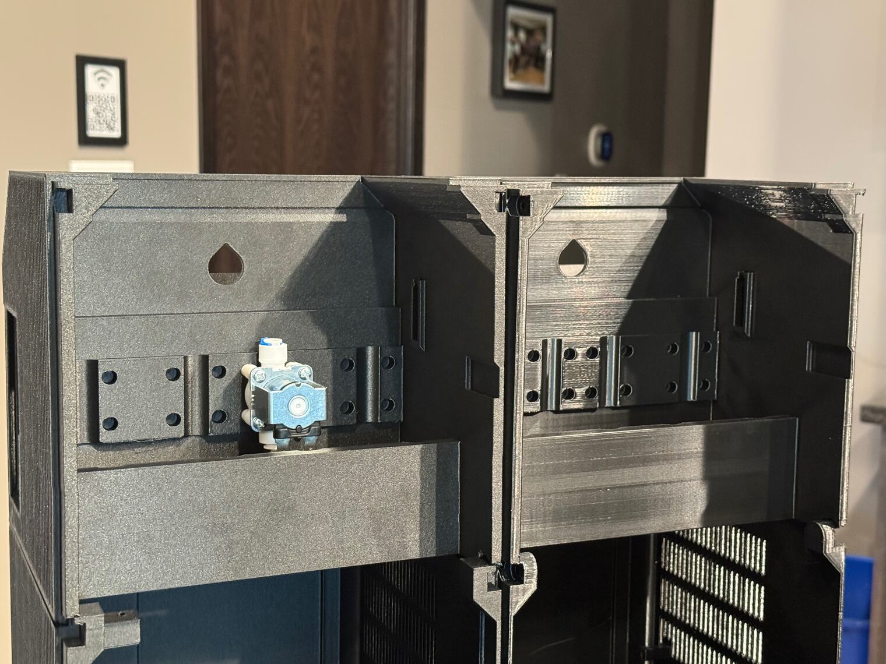
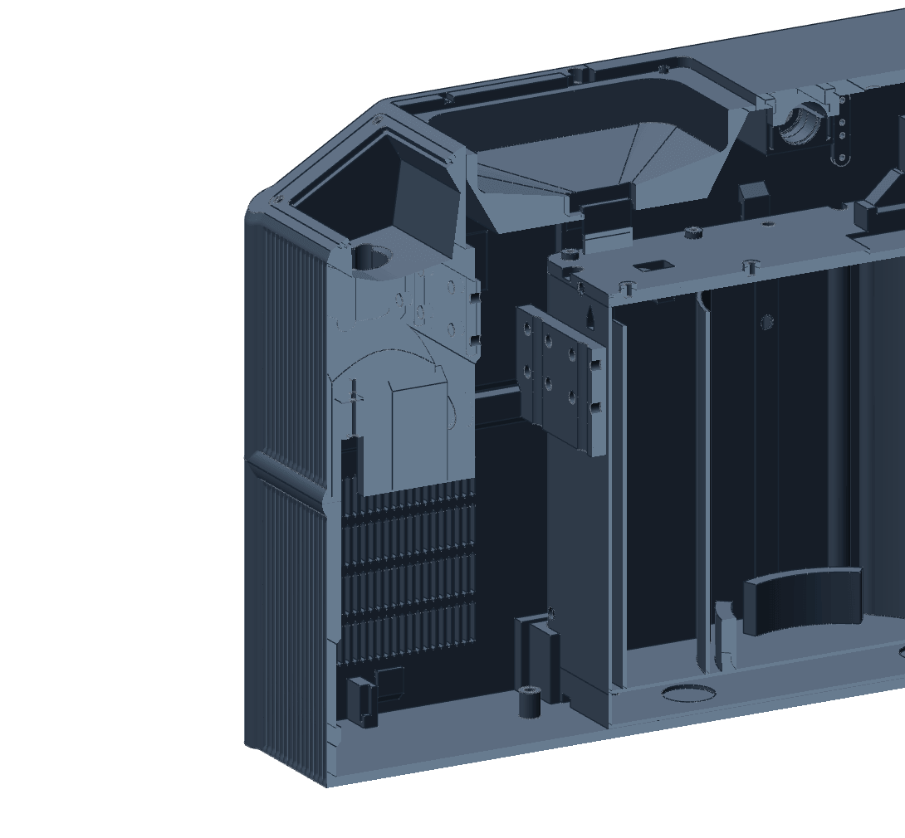

The plastic
It hides its layers and breaks along them.
PET-GF is PET with short glass fibres mixed in. The glass makes a wall stiff and gives it a flat, grainy face on which the layers do not show. It also takes the stretch away: bent the wrong way, a thin wall splits between two layers.
Seen in Polymaker Fiberon PET-GF15 · Mark 1 and Mark2 · textured PEI · hardened 0.4 mm nozzlesNot tried in: any other maker’s glass-filled PET

PET-GFPETGStiff
A wall of it does not give. A clip has to be a long, broad, thin leaf before it will spring at all.
Matte
A fine grain with no direction in it. On a flat face the layers do not show.
Weak between layers
Bent across its layers, a thin wall splits. On 17 October 2026 two white covers cracked as a display was pressed in.
No stretch
A hard part pushed into a pocket a hair too small does not ease in. On 12 November 2026 the pocket’s edge snapped off.
Abrasive
Its profile asks for a nozzle of hardness HRC {{petgf:/required_nozzle_HRC/0}} or more. Ours are hardened steel, tungsten carbide and diamond.

Where it isThe enclosure and the shell round the cold core, cut open. Everything drawn here is PET-GF.
Most of the machine
By weight it is most of the plastic we print: the four quadrants of the enclosure, the frame under the funnel, the cold core’s shell, and out of this picture the faucet, the snap caps and the tube collars.
What it replaced
Until August 2026 the box was printed in PETG and the faucet in carbon-filled PET, whose printed dowels had sheared off along their layers. The first enclosure piece in PET-GF went on the printer on 15 August, and the first faucet on 17 September.
“very beautiful wall surface.”
Still openNothing about the strength of our printed PET-GF has been measured. What this part says about it is parts that held or broke in the hand, and the maker’s own data sheet.